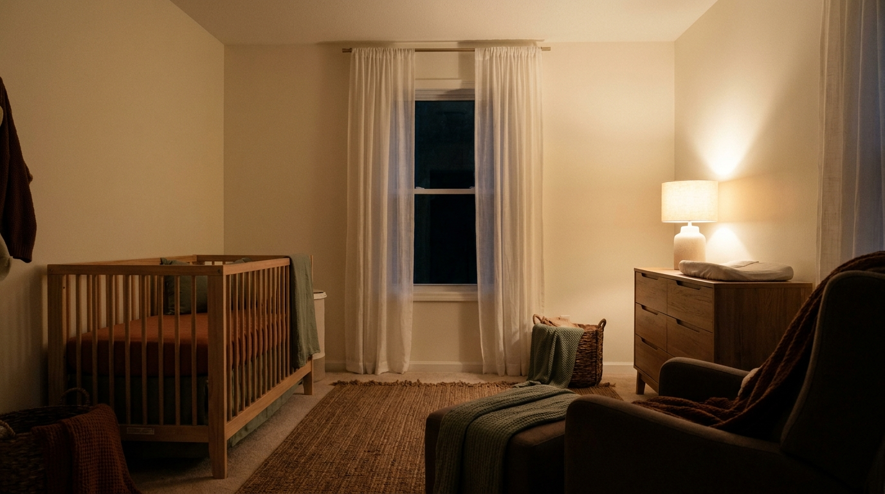
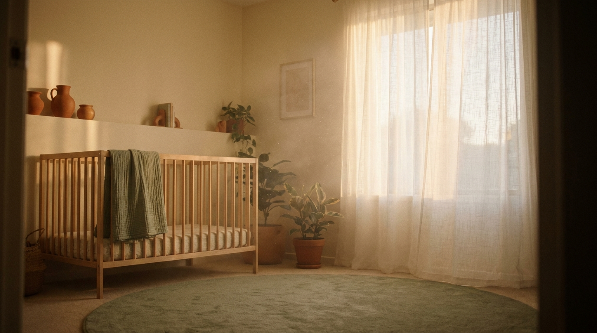

הרגלים, לא גזירת גורל
תינוק שנרדם רק על הידיים? רק עם בקבוק? זה הרגל. והרגל אפשר לשנות בעדינות, שלב אחרי שלב.
אני תמי שני, יועצת שינה והתפתחות עם 15 שנות ניסיון ואלפי משפחות שליוויתי. יחד נבנה לבייבי שלכם הרגלי שינה בריאים, בדרך ברורה ומותאמת אישית, בלי להשאיר אותו לבכות לבד.
השיעור הראשון במתנה. קודם תכירי, אחר כך תחליטי.

מזדהה?
קראת הכל. שמעת הכל. אולי גם ניסית הכל. ובין כל הגישות, השיטות והדעות (בעיקר של אמא והחמות) נשארת מבולבלת ועייפה.
אז הנה האמת הפשוטה:
לבייבי שלך אין בעיית שינה. יש לו הרגלים.
והרגלים אפשר לשנות. בעדינות, עם מענה לבכי, ובקצב שלך.
חדר הילדים, אחרי חצות. הרגע שבו הכל מרגיש בלתי אפשרי, וממש עומד להשתנות.
בלי תיאוריות מסובכות. ארבעה עקרונות שעובדים.
תינוק שנרדם רק על הידיים? רק עם בקבוק? זה הרגל. והרגל אפשר לשנות בעדינות, שלב אחרי שלב.
כל בכי מקבל מענה מיידי. גם בזמן תהליך. לומדים להרגיע, בלי לוותר על הלמידה.
מפרידים בין הנקה או בקבוק לבין הירדמות. הבייבי אוכל כשהוא רעב, ונרדם כי הוא יודע איך.
אין דרך אחת נכונה. יש דרך שאת מאמינה בה. בשיחה קצרה נמצא את שלך.
מיטה מוכנה, טקס קבוע
הירדמות עצמאית, בבטחה

סביבה רגועה, לילה שלם
מי עומדת מאחורי השיטה

תמי שני. יועצת שינה, מלווה התפתחותית, ואמא שהיתה בדיוק שם.
מילים שהגיעו אחרי הלילה הרגוע הראשון.
אין כמוך, הצלת לי את הלילות ואת הימים.
וואי, מילה במילה! ממש יישמתי את זה ועבר קליל ביותר!
בא לי להביא עוד ילד ולהתחיל את האתגר מחדש.
כל השיטה, מסודרת בסרטונים קצרים. מהשלב הראשון ועד הירדמות עצמאית.
והשיעור הראשון? במתנה. ככה תדעי אם זה בשבילך עוד לפני שהוצאת שקל.

הבוקר שאחרי. בקצב שלך, מהבית שלך.
מדריכים קצרים ופרקטיים, בנויים בדיוק לרגעים שאת צריכה תשובה עכשיו. ב-22:00 בלילה. וגם ב-02:00 לפנות בוקר.
רוצה שהמדריך הבא יגיע אליך? עקבי אחריי באינסטגרם @baby.tammy.time

תמי, בבית. ממקום של הבנה, לא של הרצאה.
ואני זוכרת בדיוק איך זה מרגיש.
התחלתי בדיוק איפה שאת נמצאת עכשיו: אמא עייפה, מבולבלת, עם תינוק שלא ישן. היום, אחרי 15 שנים ואלפי תינוקות, אני הדרך הקצרה בין הלילה הזה ללילה רגוע.
אז למדתי. ולמדתי. ולמדתי:
אבל התעודה הכי יקרה שלי? אמא שעברה את זה בעצמה.
מה אני מאמינה? שכל בכי מקבל מענה. תמיד. שהרגלים אפשר לשנות בעדינות. ושכולם ישנים בסוף. השאלה איך, מתי ובאיזו דרך. את הדרך שלך? נמצא ביחד.
שיחת ייעוץ ללא עלות. בלי התחייבות. נבין ביחד מה קורה, ואיך מתקדמים.
בלי התחייבות · מענה תוך יום · 20 דקות שמשנות את הלילה
באהבה ❤ תמי